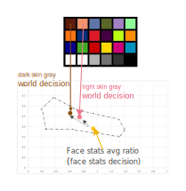
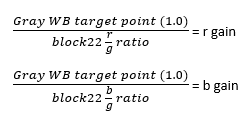
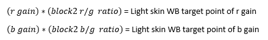
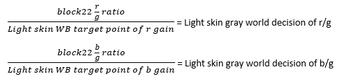
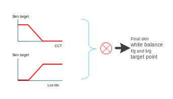
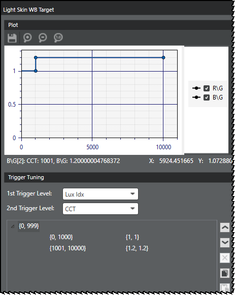

The FA SA module estimates the skin CCT by mapping the face stats decision into the gray
world decision.
To estimate the skin CCT, the FA SA module converts the face stats decision into
two gray world decisions by using the dark and light skin WB target points as detailed
in
Example of computing the light skin gray world decision.
The module then uses the mapped light skin and dark skin decisions to estimate skin CCT,
by the original gray world reference point.
Figure : Convert face stats decision into gray world decision by
applying dark and light skin WB target

Example of computing the light skin gray world decision
The following steps show how the module computes the light skin gray world
decision. The same computation is repeated with dark skin data to compute the dark
skin gray world decision.
Note: The computation makes the assumption that a correct WB is to
make R = G = B, so the regular gray WB target point is 1.0 for r/g and b/g
ratio.
- Measures the r/g and b/g ratio of MCC block 22 (gray) under D50.
- Calculates the AWB r gain and b gain using the following formulas:

- Measures the r/g and b/g ratio of MCC block 2 (light skin) under D50.
- Calculates the light skin WB target point of r gain and b gain using the
following formulas:

Note: Fine
tuning parameters are available to add flexibility for the user to adjust
the target points computed in the prior step. See the explanation below in
Sample fine tuning of light/dark skin white balance
target.
- Calculates the light skin gray world decision using the following formulas:

- The FA SA module repeats this procedure with dark skin data (MCC block 1) to
compute the dark skin gray world decision.
Fine tune light/dark skin white balance target points
The light/dark skin WB target points computed by the FA SA module are
a base value that covers most test cases, but the light/dark skin WB target can be
fine tuned if needed.
The FA SA module includes two submodules that provide flexibility for fine
tuning the light/dark skin target points. Tthe Light Skin
WB Target submodule and the Dark Skin WB
Target submodule provide a user-defined two-dimensional trigger
that allows the user to adjust the target point based on lux index and CCT as shown
in the following diagram.

Sample fine tuning of light skin WB target point of R gain and B
gain
The target value computed in Step 4 is a base value and is adequate for most
cases. If the computed light skin target point needs adjustment, use the
Light Skin WB Target module to assign a different
target point value for a user-defined lux index range or CCT range. The image below
is an example of fine tuning the light skin WB target point. The example image
defines the following conditions:
- Regardless of the Lux Index (range 0-999), when CCT is in
the range 0-1000, the light skin target (red, blue) is (1.0, 1.0).
- Regardless of the Lux Index (range 0-999), when CCT is in
the range 1001-10000, the light skin target (red, blue) is (1.2, 1.2).

Similarly, adjust the dark skin target point with the Dark Skin WB
Target module.
Eliminating extreme stats from the BG average ratio
Very dark stats and very bright (saturated) stats, easily mislead BG
stats information such as R/G and B/G stat average values. Very dark stats can be
contaminated by noise. Highly saturated non-gray stats can be treated as gray stats
and act as misleading color stats. So, like the stat screening process, face-assist
AWB excludes the dark and saturated stats to prevent them from contributing to a
final BG stat. The following parameters, found in the
Dark/Saturated
Pixel Threshold AWB module, enable the user to refine the
dark/saturated stats screening in a face-dominated scene.
- Dark Pixel Threshold: Trigger (Lux index range)
- Dark Pixel Threshold: Data (Threshold)
- Saturated Pixel Threshold: Trigger (Lux index range)
- Saturated Pixel Threshold: Data (Threshold)